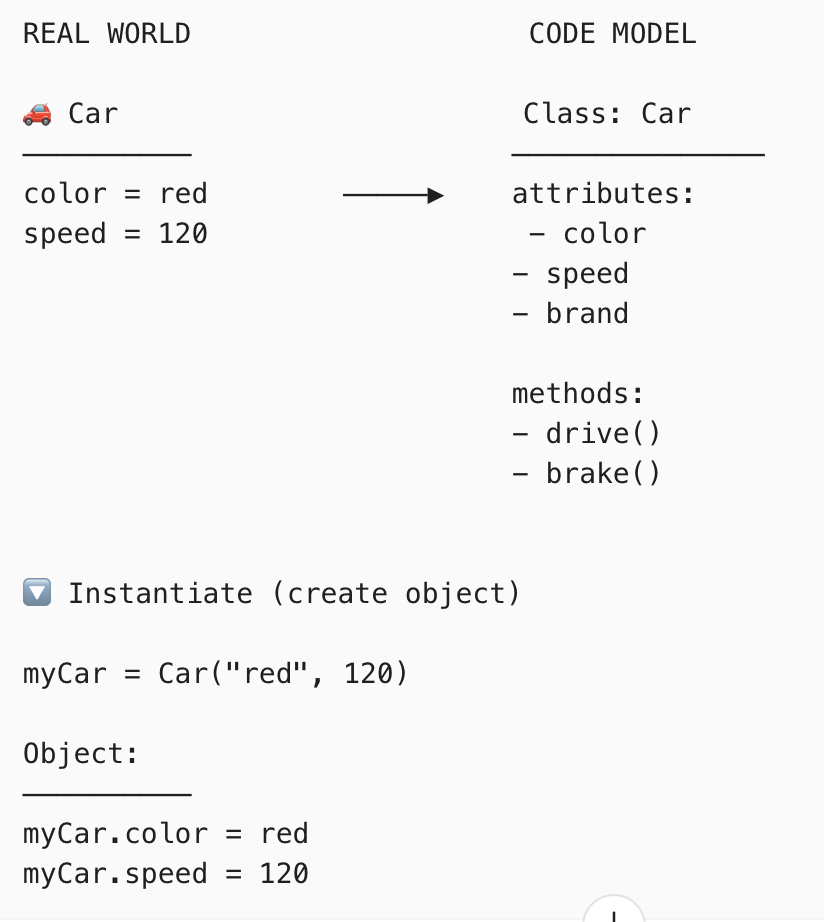
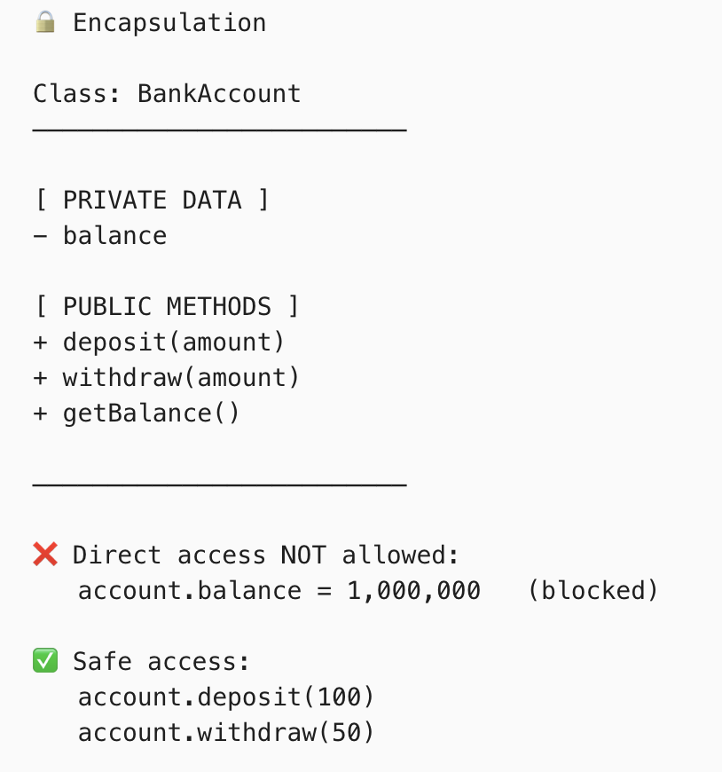

Electronic Music, American History & Computer Programming
Computer Programming
Modeling the Real World (Abstraction & Classes)

Instead of focusing solely on logic steps (procedural), OOP allows developers to structure software around real-world entities—like users, products, or bank accounts—making complex systems more intuitive to design. You define a "class" (blueprint) and instantiate "objects" (specific instances), which makes abstract concepts tangible and manageable.
Self-Contained Security (Encapsulation)

Encapsulation allows data (attributes) and the code that operates on it (methods) to be bundled together into a single unit, hiding internal details from the outside world. This is fascinating because it restricts direct access, preventing accidental modification of data and forcing interaction through well-defined, safe interfaces.
Flexibility and Code Reusability (Polymorphism & Inheritance)

Polymorphism allows different objects to be treated as instances of a common superclass, yet behave in their own unique ways. For example, a draw() method can behave differently for a Circle object versus a Square object, allowing for cleaner, more flexible code that is easy to extend without rewriting existing, working logic.
Back to Home